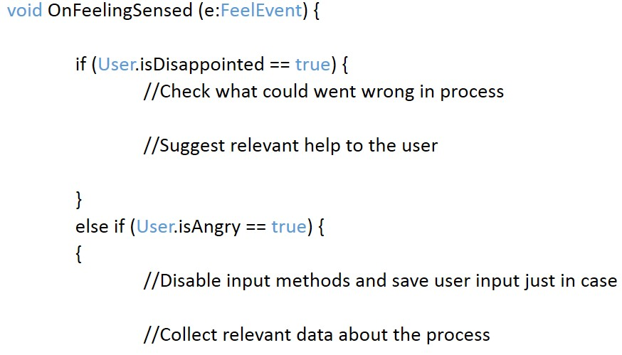

Today
Senior user experience and game designer at Intel perceptual computing studio, specializing in motion tracking and gesture recognition. I design (and develop) apps and games that use perceptual components: speech recognition, face and hand tracking and gestures, augmented reality and more.
Founded "FLUX: learning experiences", a design and development agency working to create engaging learning experiences. I work with leading educational organizations, academics and startups from the startup nation.
I'm an activist in the local design, development, gaming and ed-tech communities. I often talk about effective usage of games, play and game mechanics in education; creative learning; project based learning and simulations. I’m also doing my best to break misconceptions towards games.
I’m an "obsessive tinkerist", taking joy from redesigning experiences I encounter and playing "what if?" with ideas. I write steadily in two blogs: one about finding perfect experiences and another about constructivism and how to make learning more engaging and joyful.
passion
Tech savvy and super curious. Driven to reconnect learning with enjoyment and make products more accessible. I'm a warrior for justice and caring (both socially and environmentally).


vision
Next-Gen School
Inspired by the Media Lab and Garner's theory of multiple intelligences, we dream of a school that really prepares the kids for real life. It starts from age 0 and ends at your first successful startup. Using project-based learning, mentorship, play and simulations, and research groups learning - we believe it is possible to create an ecosystem that is both educational, social, connected with the industry and financially independent.
Design learning experiences
Design enjoyable learning experiences; test my theory to use games, toys and play to identify interests as well as teaching specific types of learning matters.
emotion recognition
Develop a technology that would understand the user intentions and feelings. Use that data to create products that can help users get by more easily.
-
Oh, and also: take over the world :)